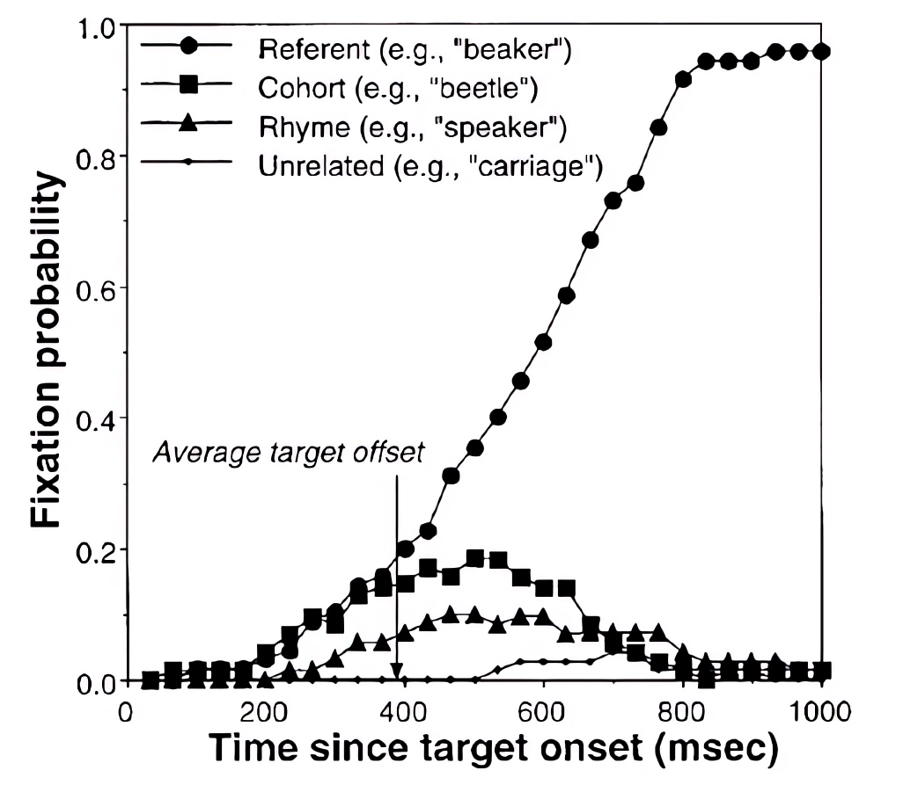

Visual World Paradigm
A classical visual world study showing how people predict upcoming words with the help of Gazepoint eye tracker
1 Introduction
1.1 Visual World Paradigm
The visual world paradigm is an experimental framework that investigates language processing by monitoring participants’ eye movements while they interact with visual stimuli. Introduced by psychologists Richard Cooper and Thomas P. McDermott in the late 1990s, this paradigm have been continuosly refined and expanded, adapting it to different research questions and using advancements in eye-tracking technology to gain deeper insights into real-time language comprehension and visual attention processes. Through this framework the researchers try to simulate the integration of spoken language and visual information as they naturally occur in everyday situations so that we can draw inferences on the attention focus on specific objects in their visual display over time.
1.2 Objective of our project
We try to answer the research question:
Does the presence of similar-sounding words influence our tendency to focus on those words apart from the target words as the word unfolds?
Our project is to study the nature of spoken word recognition as the word unfolds. Here the key aspect of the visual world paradigm is that participants’ eye movements serve as an index of their ongoing language processing and interpretation.
We aim to explore two fundamental conclusions concerning spoken word recognition and the underlying models, building upon the established research in this domain:
- Spoken word recognition is dynamic in nature which suggests that listeners continuously update and refine their interpretations as more information becomes available.
- Spoken word recognition models make assumptions that multiple candidates compete for recognition during the unfolding of the spoken word.
Paul D.Allopenna, James S. Magnuson and Michael K. Tanenhaus in their paper “Tracking the Time Course of Spoken Word Recognition Using Eye Movements: Evidence for Continuous Mapping Models” investigated a similar structure of the experiment and found the following results:

In this figure we have the probability of fixation on four words: - Referent (e.g beaker) : Target Word - Cohort (e.g beetle) : Similar Sounding Word - Rhyme (e.g speaker) : Rhyming word - Unrelated (e.g carriage) : Unrelated word to the rest (phonetically or semantically.)
In the beginning the participants hear [bi], which could be the beginning of beaker but also could be the beginning of beetle. So during the first 400 ms the particpants start looking at both of those words, more than they look at the others. After some time as they hear the [k] i.e. now they are hearing [bik], thus they discard their choice of beetle and stop looking at it. But by the time they’ve heard the whole word beaker, they might realize that beaker rhymes almost exactly with speaker and get confused about if they heard speaker at the very first place. For the last word carriage the pronunciation is totally unrelated to the target beaker, so there is a very less probability of the participant actually fixation at the unrelated word.
References: (Vitay, 2017)
\tau \, \frac{dx_j(t)}{dt} + x_j(t)= \sum_i w^{in}_{ij} \, r^{in}_i(t) + g \, \sum_{i \neq j} w^{rec}_{ij} \, r_i(t)
Important information.
for i in range(10):
print(i)